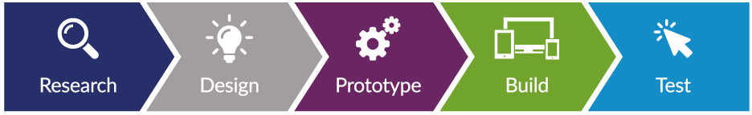
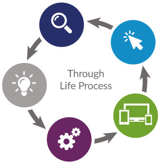

Principles
Contractors, developers and NICS Service Managers are encouraged to read and understand the principles for building transactional services on nidirect.
Developing online services for nidirect
Online transactions for nidirect should be developed using user-centred design (UCD) principles and processes.
How does UCD fit into the principles of UX?
- UX design is the discipline: what we do
- user-centred design is a process: how we do it
What does that actually mean?
- UCD is a process where the needs of the end users of a service are considered throughout each stage of the design process
- it requires the entire project team to analyse and predict how a user is likely to use a product and validating that with user testing
- testing is essential to fully understand the experience of a user of any service and their learning curve
- by using UCD, we can build a service around what the user wants and needs, rather than giving them what we think they want and forcing them to change their online behaviour
It does not mean that we ignore business needs – it simply means that we balance those needs against the user’s needs, to ensure the application is presented in a way that is intuitive.
Remember, the people using this service could be at home, on a bus, anywhere – and none of them will have a user manual.
So what does this process look like in practice?
We can break the process down into the following steps:
Research
- you must carry out user research throughout each stage of your project - don’t see it as just a tick box exercise
- doing this will ensure everyone is concentrating on both the user and business needs, their expectations and defining the solution based on actual facts
- it will also help to focus your mind on what is essential to achieve your goals
- remember, only ask for the information you need to complete the task
Design
- information gathered during your research must guide your design
- it is at this stage that the project team begin to collaborate and work together
- everyone can bring something to the table and collaborative working will lead to a better solution
- your design should give you good ideas of what processes are necessary to complete the transaction
- don’t forget this is only a design and can be changed - it is not your final solution
Prototype
- visualising your design by producing an interactive prototype, thus having something to look at and interact with, is invaluable
- feedback received on your prototype will either reinforce your design or highlight any areas for further consideration
Build
- you can now incorporate your research and feedback from your prototype into a wireframe for the developers
- a wireframe is a visual document that simply but accurately explains the technical specification of your solution
- every aspect is visually documented and annotated to explain how something will work, and to allow the developers to know exactly what to build
Test
Regardless of how much effort you put into research, designing and prototyping, there will invariably be bugs and improvements that can be made. For that reason, it is important to test what you build using multiple testing methodologies:
- Smoke testing – this is sometimes called confidence testing – and should be carried out by an internal test team. They should ensure that the software is stable and does not contain any major defects that would result in the current software release being rejected by the business. This prevents any major fault being discovered by the business or end user, possibly reducing their confidence in the solution.
- Business acceptance testing – this should be completed by the business that requested the solution and will ensure their goals are being met - although by this stage they shouldn’t discover any major defects. The business will give you an impression on how a member of the public will interact with your software. However, you should be conscious that the business will be familiar with the solution, and will not interact with the software like a member of the public.
- User acceptance testing – this testing is vital when building public facing services and is one facet of testing that is often either omitted or not given enough consideration. Members of the public using the service for the first time don’t know they shouldn’t hit the red button saying ‘Don’t press!’. This testing will inform you what may happen when your service goes live, how people will use it, what their expectations are and how intuitive it is. This can be achieved via a user lab
Go live
With testing complete, you are ready to release your solution into the wild. This is when the advantages of UCD will pay dividends.
How does this approach fit into agile development?
- UCD, like agile development, should be iterative and for that reason they complement each other
- the process should be repeated for each sprint throughout development (see below) at the end of each sprint, the results and recommendations from your testing can be fed back into the product backlog and completed in the next sprint.
Through life process
Going one step further, these principles do not stop at ‘go live’. No matter how much research and testing is completed there is always room for improvement.
After a service goes live, using analytics and feedback from the public, you should use UCD principles to identify and implement improvements throughout the life of the system.
